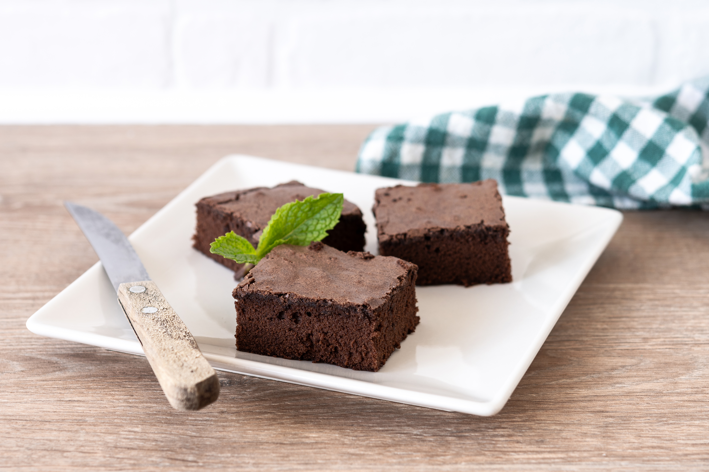

Chocolate Brownies
Home

Designed by Magnific
Description
Delicious, moist and chewy brownies.
Recipe source.
Ingredients
- 1 cup white sugar
- 1/2 cup butter, melted
- 2 large eggs
- 1/2 cup self-rising flour
- 1/3 cup unsweetened cocoa powder
- 1/4 teaspoon salt
- 1 teaspoon vanilla extract
- 1/2 cup chopped walnuts (optional)
Steps
- Preheat oven to 350°F (175°C)
- Grease and flour an 8x8 or 9x9 inch baking pan.
- Beat together sugar and butter in a medium bowl.
- Add eggs into sugar mixture and mix well.
- Combine flour, cocoa, and salt; stir into sugar mixture.
- Mix in vanilla, then stir in walnuts. Spread evenly into prepared pan.
- Bake in the preheated oven until edges are firm, 25-30 minutes. Cool before cutting into squares.